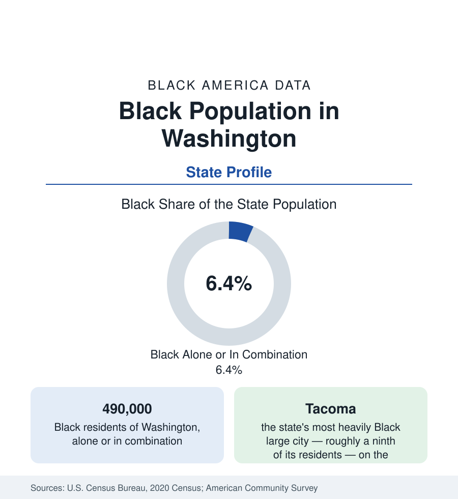

Black Census
Black Population in Washington: Seattle's Gravity and the Bases
About 490,000 Black Washington residents — one in sixteen — centered on Seattle–Tacoma and the Joint Base Lewis-McChord corridor. The census profile.

Washington holds about 490,000 Black residents — Black alone or in combination — roughly one in sixteen of its people, with Black alone at about 295,000, or 3.8 percent. The population is a Puget Sound population: Seattle's historic Central District and its south-end successor districts, Tacoma's Hilltop, and the military corridor between them hold the great majority, with Spokane and the Tri-Cities carrying the eastern layer. This article profiles the state population; the Seattle metro receives its own profile in the cities section.
Seattle and the South End
Seattle's community — treated fully in the city profile — anchors the state: a Central District that fell from roughly 70 percent Black in the 1960s to under a fifth today under the region's appreciation, its population re-formed in the Rainier Valley and the south suburbs (SeaTac, Tukwila, Renton, Kent, Federal Way), where the metro's Black majority now lives. The Eastside records small but growing shares; Everett and the Snohomish corridor (the Boeing plants' historic labor market) hold an established community. The metro's Black population totals roughly 300,000, and its data present the Pacific pattern's sharpest version: among the most educated Black populations in the nation in the aggregate tables, against the Central District's displacement curve and the south-end tracts' difficult indicators, within one county.
Tacoma and the Military Corridor
Tacoma, the state's third city, is its most heavily Black large city — roughly a ninth of its 220,000 residents — built by the port, the railroads, and above all the military: Joint Base Lewis-McChord, one of the largest installations in the nation, sprawls across the Pierce County plain south of the city, and its service families sustain Black communities through Tacoma's Hilltop and Eastside, Lakewood (a base-adjacent city with one of the state's highest Black shares for its size), Parkland, and Spanaway. The Hilltop — Tacoma's historic Black district, its name synonymous in the state's record with both its Black institutions and its hardest decades — is in the current data a gentrifying frontier of the same regional appreciation wave that remade Seattle's core. Bremerton (the naval shipyard) and the Kitsap Peninsula add the third military layer at smaller scale.
The East: Spokane and the Tri-Cities
East of the Cascades, Spokane holds the largest community — roughly 12,000 to 15,000 Black residents in its metro, a few percent of the city — built on the railroads, the hospitals and universities, and Fairchild Air Force Base. The Tri-Cities (the Hanford nuclear site's economy) hold a small professional-weighted community; Yakima's farm-labor economy includes a small Black layer amid its Latino majority workforce; the agricultural and timber counties record the region's minimums. The state's HBCU count is zero; the higher-education layer runs through the University of Washington, Washington State, and the Evergreen and Western Washington campuses, with Seattle's and Tacoma's community colleges carrying the broad base.
Composition and Change
Washington's Black composition is among the nation's most African-layered on the Pacific pattern: Seattle is a significant refugee-resettlement and asylum destination, its Somali, Ethiopian, Eritrean, and Congolese communities — centered in the Rainier Valley and the south suburbs — form a large and growing share of the metro's Black population, layered over the shipyard-and-Boeing generations' descendants and the California in-migration of the tech era. The estimates show the state Black population growing faster than the state's overall rate, concentrated in the south Sound suburbs and the Pierce County corridor, with the historic cores' shares continuing their long dilution — the displacement arithmetic that is the Washington profile's standing tension between aggregate prosperity and geographic rootedness.
Reading the Washington Numbers
The cultural record matches the corridor's scale: the Northwest African American Museum in Seattle's Central District, Tacoma's Black history institutions, a Black press tradition in Seattle running from the early twentieth century, and the region's outsized musical lineage — from the Jackson Street jazz era through Quincy Jones's and Ray Charles's Seattle apprenticeships to Jimi Hendrix, the city's most famous native son — give the state's Black population a cultural footprint the counts alone would never predict.
Washington's 490,000 Black residents form the Pacific Northwest's center of gravity — a population whose institutions, media, and political weight operate at regional scale from the Seattle–Tacoma corridor. Read the state profile with Seattle's: the city is where the community was founded, the corridor is where it now lives, and the bases are why much of it came.
More in Black Census
The Black Population of the United States: Size, Definitions, and Distribution
The Black population of the United States totals 52.8 million — 15.4 percent of the nation. How the Census Bureau defines and counts the population, and where it lives.
Black Median Household Income in the United States
Black median household income stands at $56,490 in the Census Bureau's annual income report — how the figure is measured, how it compares, and what drives it.
The Black Poverty Rate: Levels, Children, and the Long Trend
The official Black poverty rate is 17.1 percent — against 11.1 percent nationally and 7.7 percent for non-Hispanic White Americans. How poverty is measured and what the data show.
Source: U.S. Census Bureau, 2020 Census; American Community Survey; Population Estimates Program.